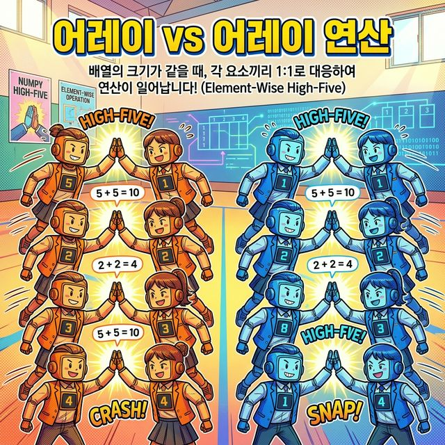
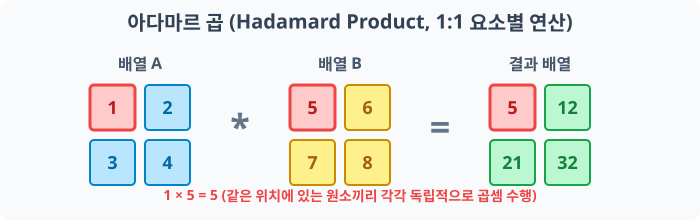
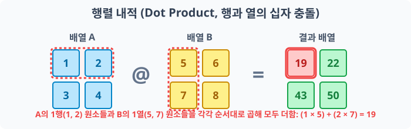
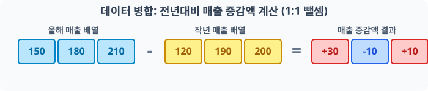
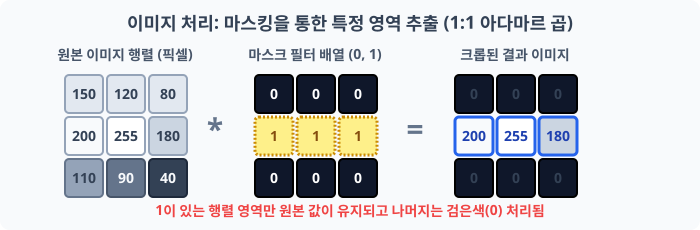
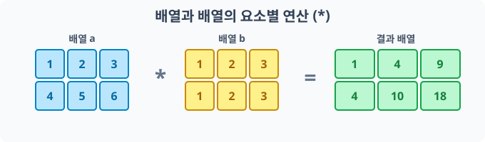
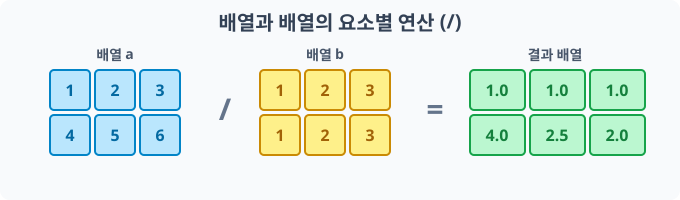
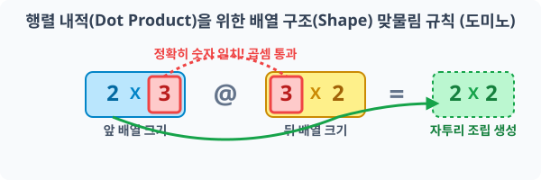
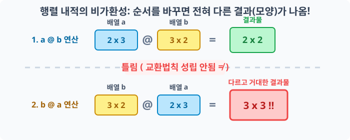

4.5.2 배열과 배열의 요소별 연산 (Element-wise Operations)
아다마르 곱 (Hadamard Product)과 요소별 연산의 의미
크기(Shape)가 동일한 두 배열에서 같은 위치(인덱스)에 있는 원소들끼리 1:1로 수행하는 연산 방식

앞서 단일 실수값이 배열 안의 전체 요소에 적용되는 브로드캐스팅(Broadcasting)을 배웠습니다.
이번에는 크기(Shape)가 정확히 동일한 두 배열 간의 사칙연산을 다룹니다. 배열 간의 기본 사칙연산은 모두 요소별 연산(Element-wise operation)으로 처리됩니다.
두 가지 종류의 행렬 곱셈
Numpy에서 다차원 배열(행렬) 간의 연산, 특히 곱셈 방식은 수학적으로 크게 두 가지로 나뉘어 처리됩니다. 이 두 가지를 혼동하지 않는 것이 매우 중요합니다.
1. 요소별 연산과 아다마르 곱 (Hadamard Product)
두 행렬의 동일한 인덱스 위치에 있는 원소끼리 1:1로 대응하여 사칙 연산을 수행하는 방식입니다. 이 중에서도 두 행렬의 요소별 곱셈 연산을 지칭하여 수학에서는 아다마르 곱(Hadamard Product)이라고 부릅니다.
Numpy 프로그래밍에서 기본 사칙연산 기호인 +, -, *, /를 사용하면 모두 이 요소별 연산(Element-wise) 방식으로 동작합니다.

붉은색 테두리로 강조된 원소처럼 서로 동일한 행렬 위치를 가진 숫자끼리만 배타적으로 대응되어 곱해지는 모습입니다.
2. 행렬의 내적 계산 (Dot Product)
선형대수학에서 정의하는 정통적인 행렬 곱셈 방식(내적 연산)입니다. 앞 행렬의 ‘행(Row)’ 벡터 요소들과 뒤 행렬의 ‘열(Column)’ 벡터 요소들을 순차적으로 곱하고 합산하여 값을 구성합니다.
이 내적 연산을 수행하기 위해서는 별도의 기호 @ 또는 .dot() 함수를 명시적으로 사용해야 합니다.

앞 행렬의 가로줄(행) 전체 집합과 뒤 행렬의 세로줄(열) 전체 집합이 십자가 형태로 교차하며 요소별로 곱해진 뒤 하나의 값 집합으로 합산하는(Dot Product) 과정입니다.
언제 어떤 용도로 사용할까? (실무 활용 사례)
실제 데이터 과학이나 프로그래밍 실무에서 배열 간의 ‘요소별 연산’은 매우 강력한 도구이며 광범위하게 쓰입니다.
1. 대규모 데이터 세트 비교 및 병합 연산
예를 들어, ‘올해의 월별 매출액’ 데이터 배열과 ‘작년의 월별 매출액’ 데이터 배열이 있다고 가정해 봅시다. 파이썬 반복문을 돌리지 않고 단순히 올해매출 - 작년매출 단 한 줄의 뺄셈 기호만으로 모든 월의 ‘전년 대비 매출 증감액 배열’을 즉시 산출해 낼 수 있습니다.

1월부터 12월까지 각각 동일한 위치(같은 월)에 해당하는 값끼리만 정확히 연산되어 증감 데이터가 추출됩니다.
2. 이미지 처리에서의 마스킹(Masking) 및 합성
컴퓨터의 이미지는 결국 숫자들로 가득 찬 2차원(또는 3차원) 배열입니다. 특정 부위만 잘라내기 위해 0과 1로 이루어진 마스크(Mask) 배열을 겹쳐서 곱셈(*) 처리를 하면, 0인 부분(검은색)의 픽셀은 통째로 삭제되고 1인 부분의 원본 픽셀 정보만 고스란히 남아 깔끔한 영역 처리(크롭)가 완성됩니다. 이 외에도 투명도를 주어 두 사진을 겹치는 알파 블렌딩(A * 0.5 + B * 0.5) 작업 등에도 요소별 사칙연산이 필수적입니다.

원본 이미지 배열에 0과 1로 구성된 마스크 필터 배열을 요소별로 아다마르 곱하게 되면, 1을 곱한 영역의 데이터만 보존되고 0을 곱한 나머지 데이터는 완전히 제거(0, 검정색)됩니다.
아다마르 연산
같은 모양(Shape) 두 원소끼리의 사칙연산
기본 배열 생성
다음 코드로 똑같은 2행 3열짜리 2차원 배열 a와 b를 준비합니다.
import numpy as np
# [1단계] 1부터 6까지 채워진 2x3 배열
a = np.arange(1, 7).reshape(2, 3)
a
출력:
array([[1, 2, 3],
[4, 5, 6]])
# [2단계] 'a'의 거푸집 틀을 빌려와 그 속을 [1, 2, 3] 패턴으로 가득 채운 쌍둥이 크기 배열
b = np.full_like(a, [1, 2, 3])
b
출력:
array([[1, 2, 3],
[1, 2, 3]])
모양이 정확히 2x3으로 동일한 두 배열은 파서는 기본 사칙 연산 연산자(+, -, *, /)를 만나면, 무조건 같은 인덱스 위치의 맞은편 짝꿍 파트너와 1:1로 요소별 연산(Element-wise)을 냅다 수행합니다.
덧셈 (Addition)
크기가 같은 두 배열끼리 덧셈(+)을 수행하면, 서로 같은 위치(인덱스)에 있는 원소들끼리만 1:1로 더해진 결과 배열이 생성됩니다.
배열
a와 배열b의 각 요소가 정확하게 같은 위치의 요소와 매칭되어 더해지는 모습입니다.
# 배열 a와 b가 1:1로 대응하여 덧셈을 수행합니다.
result_add = a + b
print("1:1 덧셈 결과:\n", result_add)
출력:
1:1 덧셈 결과:
[[2 4 6]
[5 7 9]]
뺄셈 (Subtraction)
뺄셈(-) 역시 동일하게 맞은편 짝꿍 파트너를 찾아 1:1로 빼앗는 연산을 진행합니다. 한 배열과 다른 배열의 데이터 간 차이를 비교 계산할 때 많이 쓰입니다.
동일한 위치의 배열
b값을 배열a의 값에서 빼는 계산을 수행합니다.
# 첫 번째 배열 a에서 두 번째 배열 b의 짝꿍을 1:1로 뺍니다.
result_sub = a - b
print("1:1 뺄셈 결과:\n", result_sub)
출력:
1:1 뺄셈 결과:
[[0 0 0]
[3 3 3]]
곱셈 (Multiplication)
배열과 배열 사이의 기본 곱셈(*)은 내적(Dot Product) 행렬 곱이 아닙니다! 아다마르 곱(Hadamard Product)이라 불리며 오직 자기와 똑같은 위치에 있는 맞은편 원소하고만 곱셈을 수행합니다.

행렬의 일반적인 곱셈과 다르게 완전히 1:1 픽셀 단위로 마주보고 곱하게 됩니다.
# 배열 a와 b의 같은 위치의 원소끼리만 곱합니다(아다마르 곱).
result_mul = a * b
print("1:1 곱셈 (아다마르 곱) 결과:\n", result_mul)
출력:
1:1 곱셈 (아다마르 곱) 결과:
[[ 1 4 9]
[ 4 10 18]]
나눗셈 (Division)
나눗셈(/)도 맞은편에 대응되는 친구끼리만 나누어 결과를 반환합니다. 파이썬의 나눗셈 연산은 결과를 실수형(float64)으로 바꿔버리기 때문에 결과 배열 안에 소수점이 보이게 됩니다.

위치가 일치하는 짝꿍을 찾아 나눗셈 연산을 각각 배분하여 수행합니다.
# 배열 a의 각 원소를 동일한 위치의 배열 b 원소로 1:1로 나누게 됩니다.
result_div = a / b
print("1:1 나눗셈 결과:\n", result_div)
출력:
1:1 나눗셈 결과:
[[1. 1. 1. ]
[4. 2.5 2. ]]
In-place 복합 대입 연산자와 파멸의 함정(Type Error)
Numpy 배열 연산에서도 파이썬처럼 +=, -=, *=, /= 등의 복합 대입 연산자를 지원합니다. 이를 사용하면 변수에 새로운 배열을 할당하지 않고 기존 메모리 공간을 덮어쓰기 때문에 속도와 메모리를 절약할 수 있습니다.
하지만 서로 다른 자료형(dtype) 을 가진 배열끼리 복합 대입 연산을 시도하면 끔찍한 함정에 빠질 수 있습니다.
기본 배열 생성
정수형 배열 a와 실수형 배열 b를 예로 들어보겠습니다.
# 정수형(int32) 공간 'a'
a = np.arange(4)
print("배열 a:", a)
# 실수형(float64) 공간 'b'
b = np.arange(0.5, 4, 1)
print("배열 b:", b)
1. 좁은 공간에 큰 데이터 밀어넣기 (에러 발생)
정수 전용인 a 방에 거대한 소수점 데이터인 b를 욱여넣으려(Cast) 시도하다가 좁아서 터지는(에러) 것을 볼 수 있습니다. 자료의 손실이 일어나는 경우에는 강제 저장이 안 됩니다.
정수(int32) 전용 공간에 소수점이 있는 실수(float64) 데이터를 강제로 밀어 넣으려다 실패하는 상황입니다.
# a (정수 공간) += b (실수 데이터) -> 크기가 작아서 실패!
a += b
오류:
UFuncTypeError: Cannot cast ufunc 'add' output from dtype('float64') to dtype('int32') with casting rule 'same_kind'
2. 여유로운 공간에 안전하게 담기 (성공)
반대로 넓고 여유로운 실수형 보관 공간 b에 좁은 정수형 a 데이터를 들여오는 b += a 형태는 소수점 공간이라는 넓은 집이 이미 마련되어 있으므로 문제없이 부드럽게 흡수 보관됩니다.
정수 데이터를 훨씬 더 넓은 실수형 보관 공간에 담는 것은 데이터 손실이 없으므로 안전하게 덧셈 연산 보관이 완료됩니다.
# b (실수 공간) += a (정수 데이터) -> 넉넉하므로 성공!
b += a
print("안전하게 더해진 결과 b:", b)
출력:
안전하게 더해진 결과 b: [0.5 2.5 4.5 6.5]
행렬의 내적 연산 (Dot Product)
수학에서 말하는 ‘전통적인 행렬 곱셈’인 내적(Dot Product) 연산은 아다마르 곱과 완전히 다릅니다. 앞 배열의 행(Row)과 뒤 배열의 열(Column) 개수가 서로 정확히 맞물려 떨어져야 수행할 수 있습니다.
내적 연산을 사용하려면 * 기호 대신 앳(@) 기호나 파이썬 객체 내장 .dot() 함수를 명시적으로 호출해야 합니다.
1. 내적 연산의 형태 맞물림 조건 (Shape)
두 행렬이 내적 연산을 수행할 때 반드시 지켜야 하는 크기(Shape) 맞물림 규칙이 존재합니다. 행렬을 곱할 때, 앞 배열의 안쪽 열 개수와 뒤 배열의 안쪽 행 개수가 같아야만 맞물려 통과됩니다. 연산 후 새롭게 생성되는 배열의 크기는 양 끝 바깥쪽의 형태를 따르게 됩니다.

(2, 3)크기와(3, 2)크기는 행렬의 안쪽 기준 숫자인3이 서로 일치하여 맞물리게 되므로 곱셈이 가능하며, 계산이 완료된 후에는 바깥쪽 숫자를 이어붙인(2, 2)모양의 데이터 배열이 생성됩니다.
기본 배열 생성
# (2행 3열) 앞 행렬 데이터 준비
a = np.full((2, 3), [1, 2, 3])
print("행렬 a:\n", a)
# (3행 2열) 뒤 행렬 데이터 준비
b = np.full((3, 2), [2, 1])
print("\n행렬 b:\n", b)
2. 행렬 내적 연산 수행 (교환 법칙 불가능 주의!)
최신 파이썬의 표준 연산자인 골뱅이(@) 연산자나 Numpy 객체 전용 .dot() 함수를 호출하여 앞서 배운 행렬의 십자가 형태 합산 곱을 수행합니다.
일반적인 사칙연산의 단일 숫자 곱셈은 3x2나 2x3이나 순서를 바꾸어도 결과가 같은 교환법칙이 성립합니다. 하지만, 행렬의 내적 연산은 곱하는 순서를 뒤집으면 전혀 다른 크기와 구조의 결과가 나오게 됩니다. 상황에 따라서는 내적 맞물림 조건 자체가 깨져 치명적인 연산 에러가 발생할 수도 있습니다.

a @ b와b @ a는 완전히 다른 연산 흐름을 가지며, 결과물의 형태(Shape)와 내부 데이터 구조도 전혀 다르므로 절대 혼동하면 안 됩니다.
# 직관적인 골뱅이 연산자 (파이썬 3.5 이후 지원)
result_ab = a @ b
print("행렬 a @ b 연산 결과:\n", result_ab)
출력:
행렬 a @ b 연산 결과:
[[12 6]
[12 6]]
위 구조에서 곱셈의 순서를 바꿔 이번에는 b @ a 를 시도해 보겠습니다.
앞 자리에 배치된 b(3x2) 배열과 뒷자리에 배치된 a(2x3) 배열이 새롭게 만나면서 통과 조건 기준 숫자가 2가 되고, 연산 완료 후 양 끝의 테두리에 있던 (3, 3) 짜리 거대한 행렬 구조가 결과로 튀어나옵니다!
# 순서를 바꿔 b를 앞으로, a를 뒤로 넘길 경우 완전 다른 세상이 열립니다!
result_ba = b.dot(a)
print("행렬 b @ a 연산 결과:\n", result_ba)
출력:
행렬 b @ a 연산 결과:
[[3 6 9]
[3 6 9]
[3 6 9]]